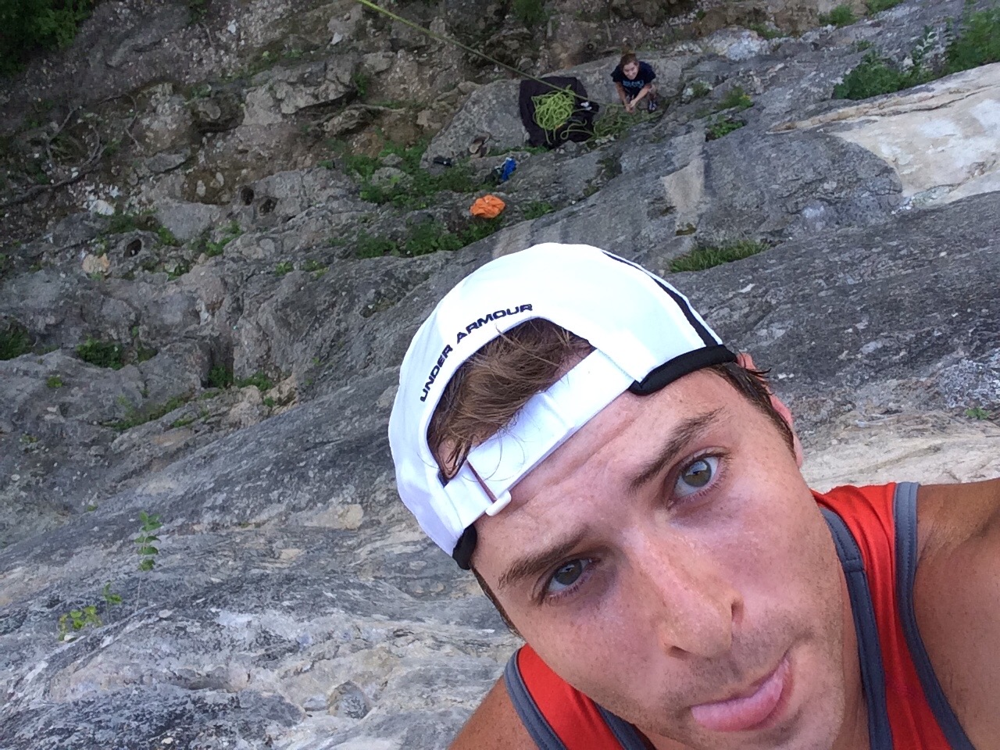

James Matthew Luker
About Me
Background
I am currently a full-time coding student at Epicodus with an emphasis on C# and React. Before attending school I was a foundation repair supervisor with proven management, streamlining, and interpersonal skills, as well as a plethora of construction trade skills including but not limited to operating heavy machinery, welding, concrete finishing and many more. Prior to that I was an Audio Engineer at two performing arts venues as well as holding the Assistant Technical Director position for several years.
Education
- Full Stack Software Development at Epicodus, Portland
- Studied Photonics at the Advanced Technology Center in Mexico, Missouri
- General Studies at Moberly Area Community College
- High School Diploma from Rock Bridge High School in Columbia, Missouri

Current Interests
- Functional Programming has really grabbed me
- Mountain Biking
- Rock Climbing
- Skiing
- Longboarding with my dog
- Playing Dungeons and Dragons with my friends
- Learning to cook new kinds of food